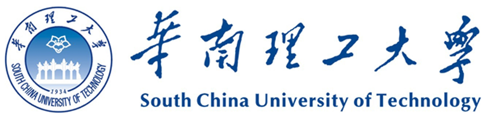

B.E. Student
School of Chemistry and Chemical Engineering 化学与化工学院 |
 |
Biography
I am currently a B.E. student with School of Chemistry and Chemical Engineering, South China University of Technology, China. My research interest mainly lies in Chemical Control, Safety Analysis, Chemical-E-Car.
Projects
- 2018- 2019 一种基于化学反应动力学定量分析的智能小车行进系统研究 项目负责人, 国家级大学生创新训练项目, 良好结题
{kind=link}
Education & Experience
- 2016.09-2020.06 South China University of Technology B.E. , Chemical Engineering and Technology
Professional Activities
- None (None)
Journal Reviewer
Publications [ORCID]
-
None
Journal Name (Journal Abbr.), year
Patent Application
- 一种基于多层感知机的室内三维可见光指纹定位系统 (201821445621.0)
- 一种基于低压电力线的可见光通信载波装置 (201822059338.0)
- 一种基于多层感知机的室内三维可见光指纹定位方法及其系统 (201811029390.X)
- 一种基于碘钟反应和STM32的智能小车行进方法及其系统 (201910192257.4)
- 融合图像传感器和惯性传感器的智能小车控制方法及系统 (201910268529.4)
- 一种基于低压电力线的可见光通信载波装置及工作方法 (201811501340.7)
- 基于颜色传感器的化学反应进程检测方法及其系统 (201910716216.0)
- 基于荧光反应和光敏传感器的智能小车行进方法及其系统 (201910716205.2)
- 一种基于碘钟反应和STM32的智能小车行进系统 (201920321244.8)
- 融合图像传感器和惯性传感器的智能小车控制系统 (201920448545.7)
Authorization Chinese Patents
Invention Patents
{kind=link}
{kind=link}
Utility Model Patents
Award
- 2017年全国大学生数学建模竞赛(广东赛区)一等奖 (中国工业与应用数学学会)
- 2018年美国大学生数学建模竞赛(MCM)一等奖 (美国数学及其应用联合会(COMAP))
- 第二届中国大学生Chem-E-Car竞赛第五名 (中国化工学会)
- 第六届全国大学生化工安全设计大赛金奖 (教育部高等学校化工类专业教学指导委员会)
- 华南理工大学第十六届“挑战杯”大学生课外学术科技作品竞赛三等奖 (华南理工大学科学技术处)
- 2019年美国大学生数学建模竞赛(MCM)一等奖 (美国数学及其应用联合会(COMAP))
- 第三届中国大学生Chem-E-Car竞赛第十名 (中国化工学会)
Competitions
{kind=link}
.jpg){kind=link}
{kind=link}
{kind=link}
{kind=link}
.png){kind=link}
{kind=link}
- 2017年第一届化州大学生微信推送制作大赛优秀奖 (化州大学生(广州)联合会)
- 2017-2018年度华南理工大学优秀学生社团干部 (共青团华南理工大学委员会)
- 2017-2018年度新博助学金 (华南理工大学化学与化工学院)
- 2017-2018年度国家奖学金 (中华人民共和国教育部)
- 2017-2018年度华南理工大学十大三好学生标兵提名奖 (华南理工大学)
- 2017-2018年度华南理工大学三好学生 (华南理工大学)
- 2017-2018年度华南理工大学何镜堂科技创新奖(20000元) (华南理工大学)
- 2018-2019年度华南理工大学“十大学生共产党员、共青团员标兵” (中国共产党华南理工大学委员会)
- 2018-2019年度华南理工大学“十大学生共产党员、共青团员标兵”最佳人气奖 (中国共产党华南理工大学委员会)
- 2017-2018年度华南理工大学“华工榜样” (华南理工大学)
Study and Life
{kind=link}
{kind=link}
{kind=link}
{kind=link}
{kind=link}
{kind=link}
.png){kind=link}
{kind=link}
{kind=link}
{kind=link}
Volunteer Service
- 2019.01-2019.12 华南理工大学“学生资助宣传大使” (华南理工大学学生资助管理中心)
- 2017.06-2017.09 卓越辅导"家教组组长" (化州大学生卓越辅导)
{kind=link}
{kind=link}

Last updated on August, 01, 2019
This site has been visisted  times.
times.